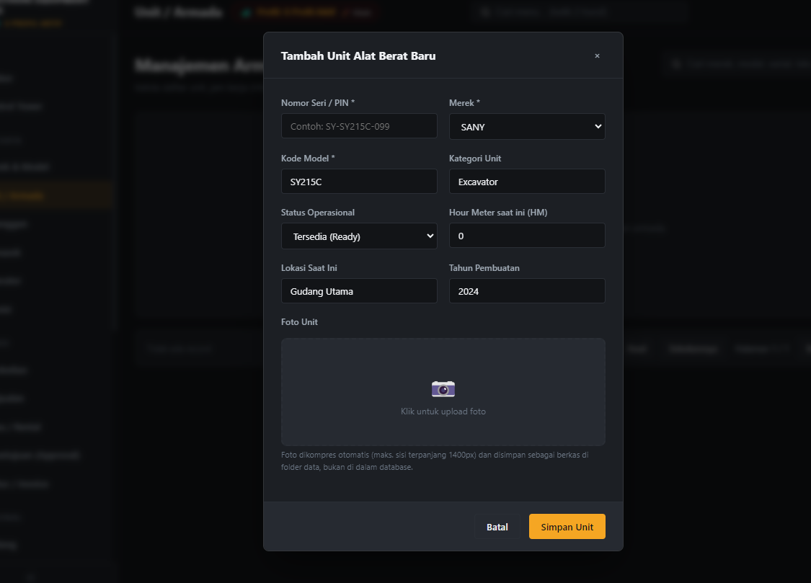
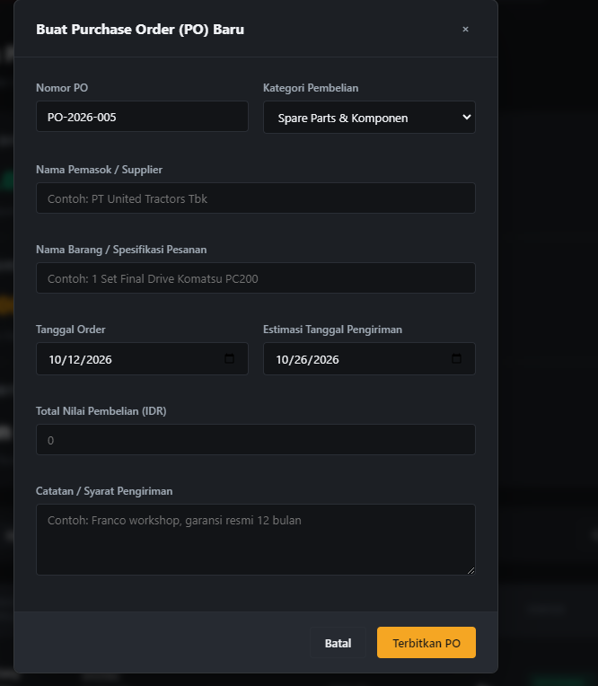
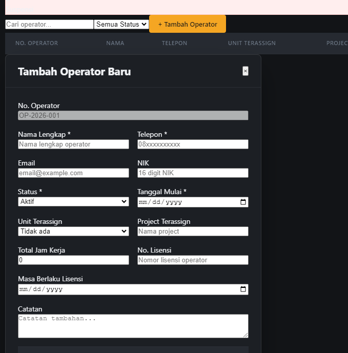
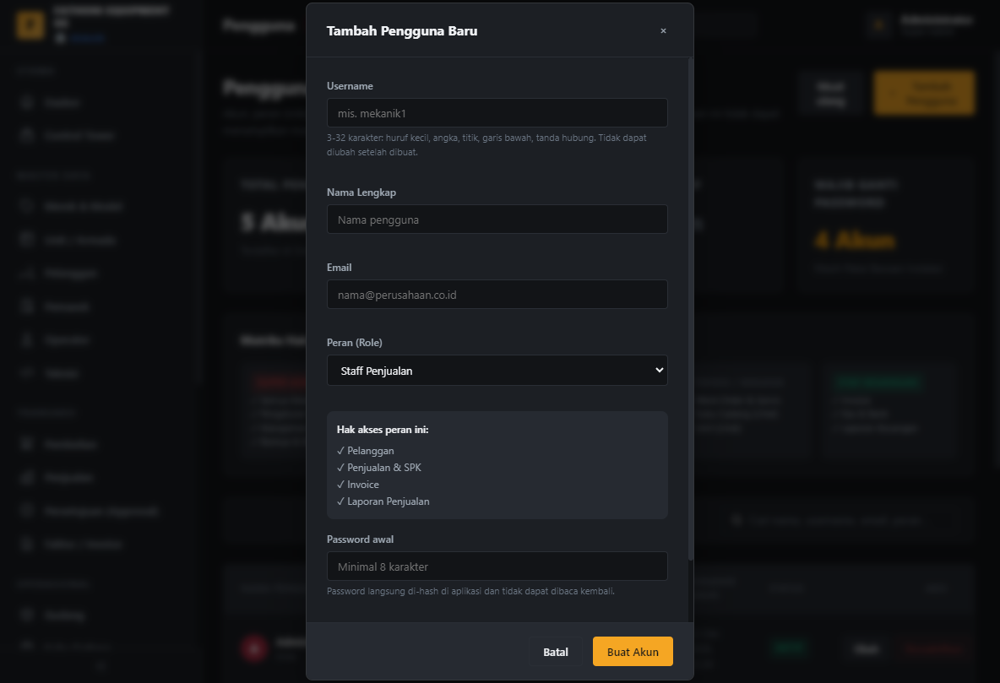
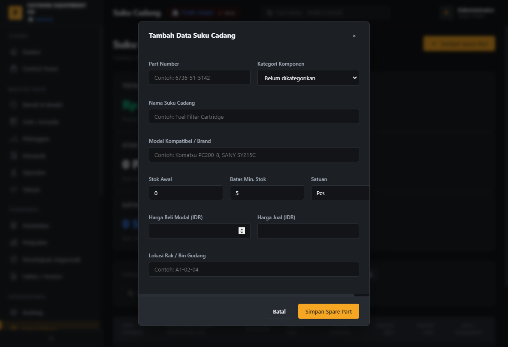
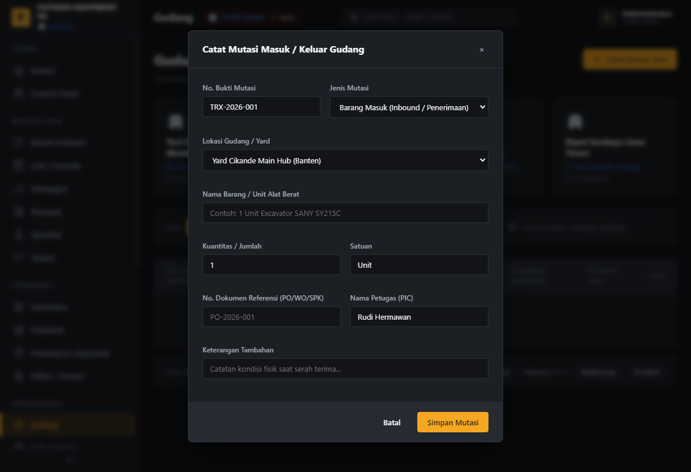

Panduan ini mengikuti urutan yang sama dengan urutan menu di aplikasi: Utama → Master Data → Transaksi → Operasional → Keuangan → Sistem. Urutan itu bukan hiasan — ia adalah alur kerja satu proyek alat berat dari awal sampai selesai.
| Item | Keterangan |
|---|---|
| Sistem operasi | Windows 10 atau 11, 64-bit. (macOS/Linux belum diuji.) |
| Hak administrator | Tidak diperlukan. Aplikasi instal ke folder user Anda sendiri. |
| Visual C++ Redistributable | Tidak diperlukan — sudah menyatu dalam paket. |
| Koneksi internet | Tidak diperlukan saat memakai aplikasi. Aplikasi ini lokal, bukan berbasis cloud. |
| Memori | Jalan nyaman pada RAM 4 GB ke atas. Pada mesin 3,8 GB (RAM bebas ±424 MB saat diukur) aplikasi tetap boot di bawah 2 detik — terukur ±1 detik pada profil 25.000 baris; lihat Bab 12 untuk angka di 400.000 baris. |
| Penyimpanan | ± 260 MB untuk aplikasi + folder data yang tumbuh sesuai jumlah record. |
FATHONI-Setup-3.1.0.exe (hasil unduhan/berbagian dari tim Anda). Ukuran berkas ± 83,2 MB.| Apa | Di mana |
|---|---|
| Program (boleh dihapus) | %LOCALAPPDATA%\Programs\FATHONI |
| Data Anda (jangan dihapus) | %APPDATA%\hems-heavy-equipment-system |
| Database utama | %APPDATA%\hems-heavy-equipment-system\fathoni.db |
| Daftar akun (tanpa password) | accounts.json di folder yang sama |
| Snapshot otomatis/manual | subfolder snapshots\ di folder data |
fathoni.db saat aplikasi berjalan bisa menghasilkan salinan setengah jadi. Untuk mencadangkan, gunakan menu Backup & Restore (Bab 5.25) — aplikasi yang menyiapkan berkasnya, dan setiap restore membuat cadangan keadaan sebelum restore.Hapus lewat Control Panel → Programs and Features atau Settings → Apps, pilih FATHONI EQUIPMENT OS. Program terhapus bersih; folder data %APPDATA%\hems-heavy-equipment-system bertahan supaya instalasi berikutnya langsung menemukan data lama. Untuk menghapus data permanen, hapus folder itu dengan sadar dan setelah backup.
admin, sales, gudang, service, finance. Password bawaan diberikan oleh tim yang menyerahkan aplikasi kepada Anda — aplikasi tidak pernah menampilkannya.admin dipakai Bapak Hendra (Super Admin) dan ia langsung mengganti password; akun sales, gudang, service, finance masing-masing diserahkan ke petugasnya dan harus diganti password oleh penerimanya saat login pertama. Password bawaan ditolak bila dipakai lagi — aplikasi menolak dengan pesan “Password masih memakai bawaan instalasi. Tentukan password sendiri.”Isi Username dan Password, tombol Masuk ke FATHONI EQUIPMENT OS. Versi aplikasi tampil sebagai badge di bawah judul.
| Aturan | Pesan yang muncul bila dilanggar |
|---|---|
| Minimal 8 karakter | Password minimal 8 karakter. |
| Maksimal 128 karakter | Password maksimal 128 karakter. |
| Tidak boleh diawali/diakhiri spasi | Password tidak boleh diawali atau diakhiri spasi. |
| Tidak boleh sama dengan username | Password tidak boleh sama dengan username. |
| Konfirmasi harus sama | Konfirmasi password tidak sama dengan password baru. |
| Bukan password bawaan instalasi | Password masih memakai bawaan instalasi. Tentukan password sendiri. |
Mengganti password menutup sesi lain pada akun yang sama. Bila Anda login di kantor dan di rumah, setelah ganti password salah satunya harus login ulang. Password disimpan sebagai hash (scrypt, salt acak per akun); tidak ada layar atau berkas yang memuat password asli.
Satu instalasi bisa memakai beberapa profil sekaligus. Profil menentukan modul apa yang ditawarkan aplikasi.
| Ikon | Profil | Fokus |
|---|---|---|
| 🚜 | Pemilik Alat (Perorangan) | 1–5 unit milik sendiri, HM, dan pendapatan operasional |
| 🏢 | Dealer / Distributor | Penjualan unit baru, penawaran, komisi dealer |
| 🏗️ | Kontraktor Project | Utilisasi armada tambang/proyek, BBM, maintenance |
| 🚚 | Perusahaan Sewa (Rental) | Kontrak sewa bulanan, jobsite, billing piutang |
| 🔧 | Bengkel / Workshop | Work Order, teknisi mekanik, stok suku cadang |
| 💰 | Pedagang Alat Bekas | Stok jual-beli alat bekas dan marjin |
Mengganti profil: klik badge Profil: … di topbar (atau menu pengguna → Ganti Profil Bisnis), aplikasi meminta konfirmasi lalu membuka halaman setup. Pilihan lama tetap tersimpan sampai disimpan ulang.
| Peran | Ditampilkan di layar sebagai | Boleh menulis pada |
|---|---|---|
SUPERADMIN | Super Admin | Semua collection, termasuk Pengguna, Persetujuan, dan Audit Log |
SALES | Staff Penjualan / Sales | Pelanggan, Penjualan (SPK), Sewa/Rental, Pengiriman, Faktur, Dokumen Legal, Unit, Katalog Merek & Model |
WAREHOUSE | Petugas Gudang | Pembelian (PO), Pemasok, Suku Cadang, Gudang, Pengiriman, Dokumen Legal, Unit, Katalog Merek & Model |
SERVICE | Teknisi / Mekanik | Servis & Work Order, Breakdown, Suku Cadang, Gudang, Faktur, Teknisi, Dokumen Legal, Unit, Katalog Merek & Model |
FINANCE | Staf Keuangan | Kas & Bank, Faktur, Rekening Bank, Dokumen Legal |
Kenapa “Unit” ikut boleh ditulis Sales/Gudang/Teknisi? Karena tiga menu itu mengubah status unit sebagai efek samping aksi yang sah: penjualan menandai unit Terjual, gudang menerima PO unit, servis menyelesaikan Work Order (status + Hour Meter + hari servis terakhir). Tanpa itu, aksi yang benar justru ditolak.
Kenapa Kas hanya Keuangan? Karena pemisahan tugas: pembayaran yang tercatat dari halaman Faktur dicatat oleh bagian keuangan.
Kenapa Persetujuan hanya Super Admin? Memberi wewenang bukan pekerjaan harian menu.
finance mencoba menyimpan transaksi gudang. Layar menampilkan:Sesi berlaku 12 jam tanpa aktivitas, dan paling lama 24 jam walaupun Anda terus memakai aplikasi. Setelah itu: “Sesi tidak valid atau kedaluwarsa.” — login ulang. Keluar dari menu pengguna → Keluar (ada konfirmasi). Mengubah peran/menonaktifkan akun langsung mematikan sesi pengguna tersebut.
Skenario: PT Cahaya Konstruksi menyewakan 1 unit excavator SANY SY215C ke PT Grand Jaya selama 3 bulan di jobsite Morowali, termasuk 2 kali servis berkala dan 1 breakdown. Peran yang dipakai bergantian: Super Admin menyiapkan data, petugas gudang membelanjakan BBM, teknisi mengerjakan servis, sales menagih, keuangan mencatat penerimaan.
| # | Menu | Aksi user | Yang terjadi otomatis (verifikasi tempat lain) |
|---|---|---|---|
| 1 | Pemasok | Tambah PT Sumber Solar Nusantara | Master tersedia untuk dropdown PO. |
| 2 | Unit / Armada | Tambah Unit: serial SY-SY215C-099, merek SANY, model SY215C, HM awal 4.520, lokasi Yard Cikande Main Hub, status Tersedia (Ready) — lihat §13.2 | Unit masuk daftar dengan nilai perolehan bawaan aplikasi Rp 1.750.000.000 (form tidak menanyakannya, §13.2); kolom turunan menghitung sisa HM menuju servis 500-an berikutnya = 480. |
| 3 | Pembelian | Buat PO Baru: kategori BBM (Solar), pemasok dari langkah 1, 3.200 liter, nilai Rp 21.120.000 | Nomor PO-2026-004 diusulkan otomatis; status awal Dipesan ke Supplier. |
| 4 | Pembelian | Klik Terima Barang → konfirmasi “Konfirmasi penerimaan barang/unit ini ke gudang?” | PO → Diterima di Gudang; Gudang menerima mutasi masuk GR-PO-2026-004; Kas mencatat pengeluaran kategori Pembelian / PO. |
| 5 | Pelanggan | Tambah PT Grand Jaya + PIC + NPWP | Master tersedia untuk dropdown kontrak sewa dan SPK. |
| 6 | Sewa / Rental | Buat Kontrak Sewa: penyewa PT Grand Jaya, unit SY-SY215C-099, jobsite Morowali, 1 Mar – 30 Jun 2026, tarif Rp 90.000.000/bulan, minimal HM 200/bulan, centang Include Operator | Kontrak RNT-2026-002; unit berubah ke Dirental; Faktur otomatis INV/RENT/RNT-2026-002 jatuh tempo +14 hari. |
| 7 | Operator | + Tambah Operator Pak Darto, tugaskan ke unit SY-SY215C-099 | Nomor OP-2026-001 otomatis; profil bisa dicetak. |
| 8 | Suku Cadang | Daftarkan Fuel Filter Cartridge part 6736-51-5142, stok 12, batas min 5, modal Rp 480.000 | Part siap dipakai WO; stok rendah memicu alert Dasbor/Control Tower bila < 5. |
| 9 | Servis & WO | Buka Work Order Servis: tipe Servis Berkala 500 Jam (Filter Komplit), unit, pelanggan PT Grand Jaya, HM 5.000, teknisi Agus Sutrisno, estimasi Rp 5.000.000 | WO WO-2026-007; saat Mulai Kerja unit → Maintenance. |
| 10 | Servis & WO | Di kartu WO klik Selesai: tambah part 1× Fuel Filter, klik Isi dengan total part, biaya aktual Rp 5.480.000 → Tandai Selesai & Terbitkan Invoice | Stok part −1; mutasi Gudang keluar “Pemakaian suku cadang Work Order” ref WO-2026-007; HM unit naik ke 5.000 dan hari servis terakhir tercatat; unit → Tersedia; Faktur INV/SVC/WO-2026-007 terbit. |
| 11 | Breakdown | + Lapor Breakdown di hari ke-40: severity Mayor, deskripsi, teknisi ditugaskan | BD-2026-003; unit → Breakdown / Rusak; jam berhenti dihitung saat status Selesai. |
| 12 | Faktur / Invoice | Buka invoice rental & servis → Bayar: jumlah Rp 90.000.000, rekening BCA - 1234567890 | Invoice → Lunas/Sebagian (Cicil); Kas mencatat penerimaan Penerimaan Rental Alat (INV-…). Pembayaran ganda dengan referensi sama ditolak. |
| 13 | Kas & Bank | Cek saldo dan mutasi | Semua langkah di atas sudah menulis kas otomatis — user hanya menambah pengeluaran manual (gaji, operasional). |
| 14 | Laporan | Tab Laporan Piutang (AR) dan Laporan Pendapatan; Ekspor CSV / Cetak PDF | Angka bersumber dari database (bukan catatan halaman), termasuk DSO dan piutang jatuh tempo. |
| 15 | Sewa / Rental | Klik Selesai Sewa di akhir kontrak | Kontrak → Selesai / Demobilisasi; unit kembali Tersedia dan bisa dikontrak lagi. |
panduan-menu/: satu berkas HTML dan PDF per menu, berisi tangkapan layar saat menu dibuka, tabel kolom tiap jendela form persis label di layar, apa yang berubah di menu lain sesudah simpan, dan batasan yang terverifikasi. Buka panduan-menu/00-indeks.html (atau 00-indeks.pdf) untuk daftar dan ringkasannya; berkas itu dibuat dari aplikasi yang benar-benar dijalankan, bukan disalin dari kode sumber./dashboardRingkasan harian sesuai profil aktif: kartu armada, total jam kerja (HM), SPK aktif, WO aktif, piutang sewa; ALERT CENTER (Critical/Due/Info, tampil 5 terbawah + “+N more alerts”); grafik tren pendapatan 6 bulan, status armada, Equipment Health Score, dan Cost per Hour Analysis. Tombol pintasan berbeda per profil, mis. 🔧 + Terbitkan WO atau 🧾 Terbitkan Invoice Rental; 🔄 Ganti Mode Profil membuka halaman setup.
/control-towerPapan pantau read-only: FLEET / OPERATING / IDLE / MAINTENANCE / BREAKDOWN, LIVE OPERATION (maks 8 unit), ALERTS (Breakdown, Service Due, Sparepart Low, Invoice Overdue), QUICK ACTIONS.
/brandsDua tab: 🏷️ Daftar Merek dan 🚜 Spesifikasi Model Unit; kolom Nama Merek / Manufaktur *, Negara Asal, Kategori Peralatan Utama, Deskripsi; model: Merek *, Kode / Nama Model *, Kategori Unit, Kapasitas, Daya Mesin, Berat Operasional. Tombol Tambah Merek / Tambah Model Unit, baris Edit / Hapus.
Perubahan yang terasa. Di 3.0.3 isi halaman ini adalah daftar bawaan di dalam layar: apa yang Anda tambah hilang saat pindah menu, dan formulir Unit sama sekali tidak membacanya. Sejak 3.0.4 kedua daftar (merek dan model) disimpan ke database — bertahan saat pindah menu, saat aplikasi ditutup, dan ikut terbawa cadangan/backup.
Daftar merek di Unit sekarang berasal dari sini. Kolom Merek * pada formulir Unit diisi isi katalog ini, dan kolom Kode Model * memberi saran kode model milik merek yang dipilih (tetap boleh mengetik kode sendiri). Katalog masih kosong? Formulir Unit memakai daftar tetap bawaan (SANY, Komatsu, Caterpillar, Kobelco, Hitachi, Volvo — validasi juga menerima JCB, XCMG, Lainnya), dan unit lama yang mereknya tidak ada di katalog tetap terbaca dengan tanda (di luar katalog) serta tidak berubah saat unitnya disimpan ulang.
Isi awal tidak dituang otomatis. Katalog pabrikan hanya masuk kalau Anda menekan Muat Katalog Awal dan mengonfirmasi “Muat katalog awal (merek pabrikan dan beberapa model umum)? Isinya bisa diedit atau dihapus setelahnya.” Tombol itu menolak bila katalog sudah berisi data (“Katalog sudah berisi data. Tambahkan atau perbarui entri satu per satu…”) sehingga tidak pernah menimpa katalog yang sedang dipakai.
Aturan yang menahan kesalahan. Nama merek dan kode model tidak boleh ganda (penolakan menyebut entri yang sudah ada); model hanya bisa dibuat di bawah merek yang sudah ada (“Pilih merek yang sudah ada di katalog…”); mengganti nama merek ditolak selama masih ada unit yang memakainya (“Nama merek tidak bisa diubah: masih ada N unit yang tercatat dengan merek …”); dan menghapus merek/model yang masih dirujuk ikut ditolak dengan daftar penahannya — sama seperti record lain di aplikasi ini.
Yang boleh menulis. Super Admin, Sales, Gudang, dan Teknisi memegang menu ini dan hak tulis collection-nya; peran lain menolak dan mencatatnya di Audit Log.
/unitsCari “Cari merek, model, serial, lokasi...” — pencarian mencakup beberapa kolom sekaligus, jadi SANY SY215C cukup diketik satu kali. 12 kartu per halaman. Tiap kartu punya 📷 (foto), 📱 Passport, Edit, Hapus.
| Kolom | Isian |
|---|---|
| Nomor Seri / PIN * | Unik, minimal 3 karakter. Contoh: SY-SY215C-099. Bila sudah dipakai unit lain: “Serial Number … sudah terdaftar pada unit lain.” |
| Merek * / Kode Model * | Merek adalah dropdown dari katalog Merek & Model (§5.3); selama katalog belum diisi, dropdown memakai daftar tetap bawaan. Kode model mengetik bebas dengan saran dari katalog merek terpilih; contoh SANY / SY215C. Unit yang mereknya tidak ada di katalog tetap tersimpan dan tampil dengan tanda (di luar katalog). |
| Kategori Unit | Excavator, Dozer, Wheel Loader, Motor Grader, Compactor, Crane, Dump Truck, Truck Mixer, Forklift, Lainnya. |
| Status Operasional | Lihat Lampiran A (10 nilai). |
| Hour Meter saat ini (HM) | Maksimal 100.000 HM. Ini meter total, bukan jam kerja hari ini. |
| Lokasi Saat Ini | Wajib diisi; contoh Yard Cikande Main Hub atau Jobsite Morowali. |
| Tahun Pembuatan | Minimal 1990. |
| Nilai perolehan (kolom yang tidak ada di form) | Aturan Rp 1.000.000 s.d. Rp 10.000.000.000 tetap dijalankan atas nilai yang tersimpan, padahal Tambah Unit tidak menanyakannya — unit baru selalu Rp 1.750.000.000 (§13.2). Akibatnya range ini praktis tidak pernah menahan isian Anda, tetapi bisa menolak tombol Simpan pada unit lama yang nilainya di luar range tanpa ada kolom yang bisa diperbaiki. Masuk daftar perbaikan 3.0.6 (Bab 12). |
| Foto Unit | JPG/PNG/WEBP; dikompres otomatis; tersimpan di luar database (lihat Bab 5.25 soal foto). |
HM tidak boleh mundur. Bila meter fisik benar-benar pernah salah dicatat lebih tinggi, aplikasi tidak mengizinkan Anda mengetik angka yang lebih kecil begitu saja — muncul pesan:
RINGKASAN · PERAWATAN · SUKU CADANG · GARANSI · SEWA · DOKUMEN · PASSPORT DIGITAL. Tombol pada kartu ini yang berhubungan dengan riwayat ada di tiap tab: + Catat Service Baru (PERAWATAN), Lihat Stok Suku Cadang dan Catat Pemakaian Part (lewat WO) (SUKU CADANG), + Alokasikan Kontrak Baru (SEWA), + Upload Dokumen (DOKUMEN). Foto unit diatur lewat 📷 Kelola Foto di atas gambar unit, data unit diubah lewat Edit, dan PASSPORT DIGITAL membuka halaman riwayat lengkap satu alat.
/equipment-passport/:idKiwayat lengkap satu unit: Overview (Total Service / Total Rental / Total Sales), Identity, Operation, Maintenance (maks 30 catatan terbaru; “Menampilkan 30 dari N catatan”), Financial, Documents. Halaman ini tampilan saja — tidak ada form, tidak ada cetak; gunakan ← Kembali ke Unit.
/customers · 5.7 Pemasok /suppliersMaster sederhana: Nama Perusahaan *, PIC/Kontak, Telepon, Email, Alamat, NPWP; Pemasok tambahan Nama Bank dan No. Rekening. Tombol Tambah Pelanggan/Tambah Pemasok, baris Edit/Hapus, pencarian “Cari pelanggan...”.
/operators · 5.9 Teknisi /techniciansKartu statistik (Total / Aktif / Cuti / Suspensi), pencarian, filter status Semua Status · Aktif · Non-Aktif · Cuti · Suspensi. Formulir Operator: No. Operator (bawaan OP-2026-001, tidak bisa diubah), Nama Lengkap *, Telepon *, Email, NIK (harus 16 digit), Status *, Tanggal Mulai *, Unit Terassign (dropdown serial), Project Terassign, Total Jam Kerja, No. Lisensi + Masa Berlaku Lisensi, Catatan. Teknisi serupa dengan TECH-2026-001, plus Spesialisasi dan Skills (tombol + Tambah Spesialisasi / + Tambah Skill meminta teks lewat kotak kecil), Total Work Orders, Total Jam Kerja. Tombol baris: ✏️ edit, 🖨️ cetak profil, 🗑️ hapus.
SY-SY215C-099, lisensi SIO-OP-2026-118 berlaku sampai 01/03/2029./purchaseFormulir Buat Purchase Order (PO) Baru: Nomor PO (diusulkan PO-2026-00X), Kategori Pembelian (Unit Alat Berat Baru/Bekas, Spare Parts & Komponen, BBM (Solar), Oli, Filter & Pelumas, Lainnya), Nama Pemasok, Nama Barang / Spesifikasi Pesanan, Tanggal Order (hari ini), Estimasi Tanggal Pengiriman (+14 hari), Total Nilai Pembelian, Catatan / Syarat Pengiriman.
Status: Draft PO → Dipesan ke Supplier → Diterima di Gudang (atau Dibatalkan). Tombol Buat PO Baru, Terima Barang (hanya muncul saat Dipesan), Edit, 🖨 Cetak PO, Hapus.
GR-<Nomor PO> di yard tujuan; pemasok baru dibuat otomatis; spare part kategori non-unit ditambah stoknya; Kas mencatat keluar kategori Pembelian / PO dengan keterangan Pembayaran PO … ke …. Karena itu jangan menambah pengeluaran manual untuk PO yang sama./salesFormulir: Nomor SPK (SO-2026-00X), Tanggal Order, Nama Pembeli (Pilih dari Data Pelanggan), Pilih Unit (AVAILABLE) — hanya unit berstatus Tersedia, Model Terpilih (otomatis, tidak bisa diubah), Total Harga Unit, Uang Muka / DP, Skema Pembayaran (Hard Cash (Tunai), Leasing Financing, Cicilan Internal (Bertahap)), Sales Representative.
Status: Draft / Penawaran → SPK Dikonfirmasi → Proses Unit / Leasing → Unit Terkirim / Selesai (atau Dibatalkan). Tombol Buat SPK Baru, Proses, Selesai, 🖨 Cetak SPK, Edit, Hapus.
INV/SALE/<No SPK> dibuat (jatuh tempo +30 hari); DP yang diisi menciptakan penerimaan Kas Penerimaan DP Penjualan …; surat jalan otomatis berstatus Menunggu Jadwal dengan catatan “Dibuat otomatis dari SPK; lengkapi jadwal dan tujuan pengiriman”; saat Selesai unit ditandai Terjual./rentalDua tampilan: 📈 Timeline (bar kontrak per bulan, tampilan awal) dan 📊 Tabel. Formulir: Nomor Kontrak (RNT-2026-00X), Nama Penyewa, Pilih Unit (AVAILABLE), Lokasi Penempatan / Jobsite, Tanggal Mulai, Tanggal Berakhir (+90 hari), Tarif Bulanan (bawaan Rp 90.000.000), Minimal Jam Operasi (HM) (bawaan 200), centang Termasuk Tenaga Operator (Include Operator).
Status: Sedang Berjalan, Menunggu Mobilisasi, Selesai / Demobilisasi, Diperpanjang. Tombol Buat Kontrak Sewa, Selesai Sewa, Edit, Cetak Perjanjian, Hapus.
INV/RENT/<No Kontrak> (tempo +14 hari). Selesai Sewa → konfirmasi “Selesaikan kontrak sewa ini dan jadwalkan demobilisasi alat?” lalu unit kembali Tersedia./approvalsPermintaan wewenang: No. Request (APR-2026-00X), Tipe Request * (Purchase Request, Maintenance Request, Rental Contract, Discount, Payment, Expense), Judul *, Deskripsi *, Requested By *, Amount, Approver Level (Level 1/2/3), Current Approver, Catatan. Aksi baris: ✓ approve (catatan opsional), ✗ reject (alasan wajib), ✏️ edit, 🖨️ cetak, 🗑️ hapus.
APR-… di kolom catatan dokumen supaya keterkaitannya terbaca./invoicesInvoice bisa dibuat manual (Buat Invoice Baru) atau datang otomatis dari Penjualan, Sewa, dan Servis. Tipe: Rental Alat Berat, Penjualan Unit, Jasa Service & Perbaikan, Spare Parts & Komponen. Status: Lunas, Sebagian (Cicil), Belum Bayar, Jatuh Tempo. Kolom pencarian “Cari no. invoice, pelanggan...”, 25 baris per halaman.
Tombol lain: 🖨 Cetak (judul dokumen INVOICE / TAGIHAN, cap LUNAS bila sudah lunas), Ekspor CSV (berkas Daftar_Invoice_FATHONI_<tanggal>.csv), Edit, Hapus.
/deliveryFormulir Buat Surat Jalan Pengiriman: Nomor Surat Jalan (DO-2026-00X), Referensi SPK (Belum Dikirim) — memilih SPK mengisi pelanggan/unit/serial otomatis, Nama Pelanggan / Penerima, Model Unit, Serial Number, Tujuan Pengiriman / Jobsite, Tanggal Kirim, Nama Driver, Plat Kendaraan, Catatan.
Status: Menunggu Jadwal → Dalam Perjalanan (Berangkat) → Serah Terima Selesai (Serah Terima). Tombol cetak: 🖨 Cetak SJ.
/warehouseJenis mutasi: Barang Masuk (Inbound / Penerimaan), Barang Keluar (Outbound / Pemakaian), Transfer Antar Yard / Gudang. Formulir: No. Bukti Mutasi * (diusulkan TRX-2026-###), Jenis Mutasi, Lokasi Gudang / Yard (empat yard tetap; bawaan Yard Cikande Main Hub), Nama Barang / Unit Alat Berat *, Kuantitas / Jumlah * (minimal 1), Satuan (bawaan Unit), No. Dokumen Referensi (PO/WO/SPK) — kosong berarti NON-REF, Nama Petugas (PIC), tanggal, keterangan. Filter tombol Semua / Barang Masuk / Barang Keluar / Mutasi Antar Gudang, 25 baris per halaman.
PO-2026-004 atau WO-2026-007). Tanpa referensi, mutasi tidak bisa ditelusuri ke dokumen asal saat laporan biaya diverifikasi./sparepartsKartu KPI: Total Nilai Persediaan, Stok Rendah (Restock Alert), Katalog Suku Cadang. Formulir: Part Number * (contoh 6736-51-5142), Kategori Komponen (Belum dikategorikan, Filter & Saringan, Undercarriage (Track/Roller), Hydraulic Component, Engine & Transmission, Electrical & Starter, Bucket/Teeth & Breaker), Nama Suku Cadang *, Model Kompatibel / Brand, Stok Awal, Batas Min. Stok (bawaan 5), Satuan (Pcs), Harga Beli Modal, Harga Jual, Lokasi Rak / Bin Gudang (contoh A1-02-04). Aksi: Tambah Spare Part, +1/-1 stok opname cepat, Edit, Hapus; pencarian “Cari part number, nama part, rak...”.
/serviceDua tampilan: 📋 Kanban (kolom Menunggu Teknisi, Menunggu Part, Sedang Dikerjakan, Selesai — kartu bisa ditarik, “Tarik item ke sini”) dan 📊 Tabel. Tipe WO: Servis Berkala 250 Jam (Oli & Filter), 500 Jam (Filter Komplit), 1000 Jam (Major Check), Breakdown Repair (Kerusakan Lapangan), Overhaul Komponen, Inspeksi Pra-Kirim (PDI). Status: Menunggu Teknisi, Sedang Dikerjakan, Menunggu Sparepart, Servis Selesai.
Formulir: Nomor Work Order (WO-2026-###), Tipe Servis, Pilih Unit (AVAILABLE/ON_PROJECT) *, Pelanggan (Pilih dari Master) * (ada pilihan INTERNAL Yard / Gudang Utama untuk unit sendiri), Hour Meter (HM) — bacaan meter hari itu, Teknisi / Mekanik *, Estimasi Biaya (IDR), Keluhan / Catatan.
INV/SVC/<No WO> terbit, jatuh tempo +14 hari. Pembayaran tagihan servis dicatat di Faktur, bukan di halaman ini.Siklus standar aplikasi adalah 500 HM. Sisa menuju servis berikutnya dihitung dari meter saat ini: 500 − (HM mod 500). Contoh: HM 5.020 → sisa 480 HM; servis berikutnya di 5.500. Angka ini yang dipakai kartu “Service Due” di Dasbor/Control Tower. Tipe Servis boleh 250/500/1000 jam — pilih sesuai pekerjaan yang benar-benar dikerjakan, itu menentukan nama WO, bukan menghitung ulang jadwal.
/breakdownFormulir + Lapor Breakdown: No. Breakdown (BD-2026-###), Serial Number Unit *, Model Unit *, Lokasi *, Dilaporkan Oleh *, Severity * (Critical = unit tidak bisa bergerak sama sekali, Major = fungsi utama terganggu, Minor = masalah kecil, masih bisa operasi), Status * (Dilaporkan → Inspeksi → Diagnosis → Perbaikan → Testing → Selesai, atau Dibatalkan), Deskripsi Masalah * (minimal 10 karakter), Diagnosis, Teknisi yang Ditugaskan, Estimasi Biaya Perbaikan, Biaya Aktual, Waktu Mulai/Selesai, Catatan Penyelesaian.
Waktu mulai/selesai terisi otomatis pada status tertentu dan downtime dihitung darinya. Melapor breakdown mengubah unit menjadi Breakdown / Rusak; menyelesaikan mengembalikan Tersedia. Perbaikan fisiknya dikerjakan lewat WO Servis (agar part, biaya, dan HM tercatat); Breakdown adalah catatan kejadian & downtime.
/financeTipe: ⬆ Kas Masuk (Penerimaan) / ⬇ Kas Keluar (Pengeluaran). Kategori: Penjualan Unit, Rental Alat, Jasa Service, Pembelian / PO, Biaya Operasional, Gaji & Tunjangan, Lainnya. Formulir: Tipe Transaksi, Tanggal Transaksi, Keterangan *, Kategori, Rekening / Kas, Jumlah (IDR) *, Nomor Referensi (SPK/PO/INV). KPI Total Kas Masuk / Keluar / Saldo Bersih dihitung langsung dari database; daftar 25 baris per halaman.
/reportsTiga tab: 💰 Laporan Pendapatan (bulanan: Rental/Penjualan/Service/Total + baris TOTAL KESELURUHAN, 6 bulan terakhir, KPI sepanjang masa), 🚜 Laporan Kinerja Unit (serial, model, status, Total Jam Digunakan/HM, harga perolehan), 📋 Laporan Piutang (AR) (invoice belum lunas/sebagian; KPI Total Piutang Beredar, Piutang Jatuh Tempo, Rata-Rata Umur Piutang (DSO)). Tombol Ekspor CSV dan Cetak PDF per tab.
/settingsEnam tab, tombol Simpan Pengaturan (balasan ✅ Tersimpan!):
| Tab | Isi |
|---|---|
| Perusahaan | Nama Perusahaan, NPWP, Alamat Lengkap, Telepon, Email — header semua dokumen cetak. |
| Modul & Menu | 17 sakelar modul (Merek & Model … Backup & Restore), tombol ⚙️ Ubah Profil Bisnis dan ⚡ Aktifkan Semua Modul. Modul mati = tidak muncul di sidebar, cari menu, maupun Ctrl+K. |
| Sistem | Mata Uang (IDR/USD/SGD), Zona Waktu (WIB/WITA/WIT). Format tanggal Indonesia DD/MM/YYYY. “Perubahan zona waktu berlaku setelah restart aplikasi.” |
| Rekening Bank | Daftar nama bank + nomor rekening + status aktif — sumber dropdown Kas & Bank dan Faktur. |
| Cetak | Ukuran Kertas Default (A4, A5, Letter, Thermal 58mm, Thermal 80mm) dan Orientasi Default (Portrait, Landscape). Keduanya hiasan di 3.0.4: pilihannya tidak tersimpan dan tidak dibaca dokumen cetak mana pun — ukuran dan orientasi setiap cetakan ditentukan halaman asalnya (Bab 12). |
| Tentang | Nama aplikasi, Versi — angka ini dibaca dari versi aplikasi yang terpasang (3.1.0 pada panduan ini), lisensi, hak cipta. |
/usersHanya Super Admin. Formulir akun: Username (3–32 karakter: huruf kecil, angka, titik, garis bawah, tanda hubung — tidak bisa diubah setelah dibuat), Nama Lengkap, Email, Peran (Role), Password awal (minimal 8 karakter) / Reset password (kosongkan bila tidak diganti), centang Akun Aktif (dapat login). Aksi: Muat ulang, Tambah Pengguna, Ubah, Nonaktifkan/Aktifkan, Hapus. Layar ini tidak pernah menampilkan password, hash, atau salt.
rimba, nama Rimba Prayoga, email, peran Teknisi / Mekanik, password awal 9 karakter sementara, centang aktif. Ia login, dipaksa ganti password oleh layar kunci, dan hanya melihat menu servis/parts/gudang sesuai perannya./documentsTombol + Upload Dokumen: Jenis Dokumen (SIA (Surat Izin Alat), SIUP (Surat Izin Usaha Perdagangan), NIB (Nomor Induk Berusaha), NPWP (Nomor Pokok Wajib Pajak), Sertifikat Kepemilikan Unit, STNK (Surat Tanda Nomor Kendaraan), BPKB (Bukti Kepemilikan Kendaraan), Asuransi Unit, Perjanjian Sewa, Kontrak Kerjasama, Lainnya), Nomor Dokumen * (contoh SIA-2024-8891-JKT), Masa Berlaku *, Status Legalitas (Aktif, Kadaluarsa, Dicabut, Menunggu), Upload File PDF (pemilih berkas menerima .pdf saja), Keterangan. Baris punya 📥 Unduh PDF, ✏️ Edit, 🗑️ Hapus; badge kedaluwarsa dihitung otomatis dari tanggal: lewat tanggal → Kadaluarsa, ≤ 30 hari → Menunggu (N hari lagi).
/backup| Fitur | Cara pakai dan batas |
|---|---|
| Backup Database → Backup Sekarang | Mengekspor berkas cadangan .sanybak (JSON berstruktur {_meta, data}). Maksimal 64 MB per berkas. Aplikasi menanyakan “Sertakan N berkas foto ke backup?” — foto disimpan di luar database, jadi harus disetuju terpisah. |
| Snapshot Database Lokal → Buat Snapshot | Cadangan internal di folder snapshots\, tiap baris menampilkan tanggal, sebab (manual/auto/pra-restore), jumlah baris, ukuran, dan checksum sha1. Desktop menyimpan 7 snapshot terbaru (terlama dihapus otomatis). Tombol Pulihkan per baris. |
| Backup otomatis | Tiap 30 menit, dijeda saat jendela aplikasi tidak terlihat. Ini jaring pengaman, bukan pengganti backup harian yang Anda simpan di luar komputer. |
| Restore Database → Pilih File Backup... | Konfirmasi keras: “PERINGATAN: Restore akan MENGGANTIKAN seluruh data saat ini dengan data dari file backup. Pastikan Anda sudah melakukan backup terbaru sebelum melanjutkan. Lanjutkan?” Untuk snapshot: keadaan sebelum restore dicadangkan lebih dulu sebagai snapshot pra-restore, lalu hasil pemeriksaan integritas database dilaporkan. |
| Penolakan berkas | “File bukan JSON yang valid (kemungkinan rusak di tengah).”, “File tidak punya _meta.version …”, “File tidak berisi database utama (hems_data_store_v1) — ini bukan backup data FATHONI.”, “Database tidak bisa dibaca — backup dibatalkan agar tidak menyimpan data setengah.” |
| 📊 Penggunaan Storage · 📋 Ringkasan Data · Log Aktivitas | Peringatan “⚠️ Storage hampir penuh! Segera lakukan backup dan bersihkan data lama.”. Log bisa dibersihkan dengan Bersihkan. |
/maintenanceTombol: 🔄 Run Health Check (status HEALTHY / DEGRADED / UNHEALTHY dengan rincian PASS/WARN/FAIL per pemeriksaan), 📦 Muat Data Contoh, 💾 Create Backup, 🔧 Repair Data, 🗑️ Clear Backups, Restore per berkas, 📥 Export log error, 📊 Export Health Report. Bagian lain: Storage Usage, Data & Migrasi, Data Recovery, Error Logs (10 terakhir).
/audit-logHanya Super Admin. KPI: Total Kejadian, Login Gagal / Terkunci, Perubahan Password, Kejadian Akun. Filter: pencarian “Cari akun, kejadian, atau detail...” + pilihan 11 jenis kejadian: Login berhasil, Login gagal, Akun terkunci, Keluar, Password diganti, Password direset, Akun dibuat, Akun diubah, Akun dihapus, Baris dihapus, Tulis data ditolak. Kolom: Waktu / Kejadian / Akun / Dilakukan oleh (kosong → Sistem) / Detail. Tersedia 📥 Export CSV dan cetak per baris.
Aplikasi menolak angka yang mustahil sebelum masuk database. Tabel ini membuat pesan yang muncul di layar bisa langsung ditindaklanjuti.
| Aturan | Pesan di layar | Yang harus dilakukan |
|---|---|---|
| Hour Meter maksimal 100.000 HM | Hour Meter tidak realistis (maksimal 100.000 HM) | Cek satuan: HM adalah jam meter, bukan menit. |
| HM tidak boleh negatif / bukan angka | Hour Meter harus berupa angka · Hour Meter tidak boleh negatif | Kosongkan bila belum diketahui; jangan menulis “±”. |
| Meter mundur wajib jadi koreksi beralasan | Hour Meter mundur dari X ke Y (Z jam). … centang “Ini koreksi pembacaan meter” … | Centang koreksi + isi alasan (§5.4). |
| Serial unik, min 3 karakter | Serial Number wajib diisi · … sudah terdaftar pada unit lain | Cari dulu di daftar unit sebelum membuat. |
| Merek/kategori harus dari daftar | Merek tidak valid. Pilih dari: … · Kategori tidak valid. Pilih dari: … | Pilih dari dropdown, jangan mengetik bebas. |
| Tahun pembuatan ≥ 1990 | Tahun minimal 1990 | Perbaiki tahun unit tua hasil impor. |
| Nilai unit Rp 1 juta – Rp 10 miliar | Nilai minimal Rp 1.000.000 · Nilai maksimal Rp 10.000.000.000 | Isi harga perolehan, bukan harga jual penawaran. |
| DP ≤ harga unit | Uang muka tidak boleh lebih dari harga unit | Pindah kelebihan ke DP kedua atau kurangi. |
| Bayar ≤ sisa tagihan | Pembayaran melebihi sisa tagihan Rp … | Catat sebagian, atau buat invoice lain untuk kelebihan. |
| Estimasi biaya WO ≤ Rp 100 juta; biaya aktual ≤ Rp 1 miliar | pesan validasi nilai muncul di kolom terkait | Pecah pekerjaan besar jadi beberapa WO. |
| Tanggal akhir ≥ tanggal awal | Tanggal Selesai tidak boleh sebelum Tanggal Mulai · Estimasi Tiba tidak boleh sebelum Tanggal Order · Tanggal selesai tidak boleh sebelum tanggal mulai | Perbaiki urutan tanggal sebelum menyimpan. |
| NIK 16 digit | NIK harus 16 digit | Kosongkan bila belum memiliki NIK; jangan isi 15. |
| Telepon ≥ 10 digit | Nomor telepon minimal 10 digit · Format nomor telepon tidak valid | Format 0812xxxxxxx; hindari spasi dan tanda hubung berlebih. |
| Deskripsi ≥ 10 karakter | Deskripsi minimal 10 karakter | Tulis gejala/pekerjaan lengkap, bukan “rusak”. |
| Rekening/part wajib lengkap | Isi part number dan nama suku cadang · Isi keterangan transaksi dan jumlah dengan benar · Isi deskripsi barang/unit yang dimutasi | Lengkapi kolom bertanda *. |
| Stok part cukup | Stok … hanya N … Kurangi jumlah pemakaian. | Restok lewat PO, atau kurangi pemakaian dan catat sisanya di WO susulan. |
| Orang/unit masih dirujuk dokumen | Record ini masih dipakai dokumen lain, jadi belum bisa dihapus. Hapus atau pindahkan dokumennya lebih dulu — … | Ikuti daftar penahannya; jangan hapus induk demi menghapus anak. |
| Wewenang peran | Akun dengan peran … tidak berwewenang menulis ke “…”. | Pindahkan catatan ke peran pemilik menu, atau minta Super Admin. |
Nomor diusulkan otomatis saat formulir dibuka, bersumber dari database (tidak akan menabrak nomor yang sudah ada), dan boleh Anda ganti bila mengikuti nomor buku fisik. Nomor orang (OP/TECH) terkunci di layar.
| Dokumen | Pola | Contoh |
|---|---|---|
| Purchase Order | PO-<tahun>-00X | PO-2026-004 |
| SPK Penjualan | SO-<tahun>-00X | SO-2026-002 |
| Kontrak Sewa | RNT-<tahun>-00X | RNT-2026-002 |
| Invoice manual | INV-<tahun>-00X | INV-2026-011 |
| Invoice otomatis servis | INV/SVC/<No WO> | INV/SVC/WO-2026-007 |
| Invoice otomatis penjualan / sewa | INV/SALE/<SPK>, INV/RENT/<Kontrak> | INV/SALE/SO-2026-002 |
| Surat Jalan | DO-<tahun>-00X | DO-2026-005 |
| Work Order | WO-<tahun>-00X | WO-2026-007 |
| Mutasi Gudang | TRX-<tahun>-###; penerimaan PO = GR-<No PO>; tanpa referensi = NON-REF | GR-PO-2026-004 |
| Request Persetujuan | APR-<tahun>-00X | APR-2026-001 |
| Breakdown | BD-<tahun>-### | BD-2026-003 |
| Operator / Teknisi | OP-<tahun>-00X / TECH-<tahun>-00X | OP-2026-001, TECH-2026-002 |
Semua cetak memakai mekanisme aplikasi (bukan browser). Yang terjadi saat tombol cetak ditekan: muncul konfirmasi, lalu jendela cetak asli Windows terbuka dengan dokumen yang sudah diformat — pilih printer di jendela itu, atau “Save as PDF”.
| Menu | Tombol | Judul dokumen tercetak |
|---|---|---|
| Pembelian | 🖨 Cetak PO | PURCHASE ORDER |
| Penjualan | 🖨 Cetak SPK | SURAT PESANAN KENDARAAN (SPK) |
| Sewa / Rental | Cetak Perjanjian | SURAT PERJANJIAN SEWA (RENTAL CONTRACT) |
| Faktur | 🖨 Cetak | INVOICE / TAGIHAN (cap LUNAS bila lunas) |
| Pengiriman | 🖨 Cetak SJ | SURAT JALAN PENGIRIMAN UNIT |
| Servis & WO | 🖨 Cetak WO | WORK ORDER SERVIS ALAT BERAT (TTD Mekanik, Kepala Bengkel, Pelanggan) |
| Breakdown | 🖨️ | Breakdown Management Report |
| Operator / Teknisi | 🖨️ | Operator Profile / Technician Profile |
| Persetujuan | 🖨️ | Approval Request |
| Gudang | Cetak Bukti | BUKTI SERAH TERIMA MUTASI BARANG (TTD Petugas Gudang, Admin Logistik, Penerima Barang) — baru mencetak sungguhan sejak 3.0.4 |
| Laporan | Cetak PDF | LAPORAN REKAPITULASI PENDAPATAN / KINERJA & ASET UNIT ALAT BERAT / PIUTANG BEREDAR (AR) |
| Audit Log | 🖨️ per baris | Jejak audit satu kejadian |
Ukuran kertas dan orientasi diatur di Pengaturan → Cetak (bawaan A4, Portrait; tersedia A5, Letter, Thermal 58/80 mm). Konti: header memakai Nama Perusahaan dari Pengaturan → Perusahaan; footer bertuliskan dibuat oleh FATHONI EQUIPMENT OS.
Daftar_Invoice_FATHONI_<tanggal>.csv.Laporan_Pendapatan_FATHONI_…, Laporan_Kinerja_Unit_FATHONI_…, Laporan_Piutang_FATHONI_… (dua yang terakhir sampai 5.000 baris, ditelusuri halaman demi halaman).File yang berisi teks diawali =, +, -, atau @ (mis. nama part) di sanitize supaya tidak menjadi rumus saat dibuka Excel — itu perlindungan, bukan kerusakan data. Buka CSV Excel dengan pilihan “UTF-8” agar karakter Indonesia terbaca.
| Kapan | Siapa | Apa |
|---|---|---|
| Setiap pagi | Semua | Buka Dasbor → baca ALERT CENTER (Service Due, Sparepart Low, Invoice Overdue). Pastikan tidak ada banner merah di atas layar. |
| Saat ada pekerjaan lapangan | Operator/Telemetri | Catat HM di WO Servis saat mengerjakan; lapor Breakdown begitu terjadi, jangan menumpuk di akhir pekan. |
| Setiap transaksi selesai | Sales/Keuangan | Invoice dibayar lewat tombol Bayar di Faktur. Jangan membuat catatan Kas duplikat. |
| Setiap akhir hari | Super Admin/Keuangan | Backup Sekarang di Backup & Restore; salin berkas keluar dari komputer. |
| Setiap minggu | Super Admin | Run Health Check di Pemeliharaan Sistem; cek Terakhir Login di Pengguna untuk akun mati; review Audit Log (Login gagal, Tulis data ditolak, Baris dihapus). |
| Setiap bulan | Keuangan | Laporan Pendapatan & Piutang: ekspor, cocokkan dengan rekening koran; tutup kontrak sewa yang habis agar unit kembali Tersedia. |
| Sebelum upgrade versi | Super Admin | Backup file (snapshot saja tidak cukup). Instalasi versi baru tidak menghapus data, tetapi backup adalah kebijakan baku. |
| Gejala | Sebab paling mungkin | Tindakan |
|---|---|---|
| Menu yang “harus ada” tidak muncul di sidebar | Profil bisnis tidak mencakup modul; atau peran Anda tidak memegangnya; atau modul dimatikan | Cek badge profil → aktifkan profil; Pengaturan → Modul & Menu → ⚡ Aktifkan Semua Modul; bila tetap tidak muncul, itu memang hak peran lain (§2.5). |
| Daftar kosong padahal data ada | Data masih dimuat dari database | Tunggu pager menampilkan jumlah record; bila tulisan “Tidak ada record · memuat...” menetap, muat ulang halaman (menu lain → kembali). |
| Unit tidak bisa dipilih di SPK/kontrak | Status unit bukan Tersedia (masih dirental/di proyek/maintenance/breakdown/terjual) | Selesaikan kontrak (Selesai Sewa) atau WO/Breakdown lebih dulu. |
| Penolakan saat simpan: tidak berwenang menulis ke … | Peran tidak memegang collection | Catat nomor/isi yang diminta dan minta peran pemilik menu atau Super Admin. Kejadian tercatat di Audit Log. |
| Hapus teknisi/pelanggan/unit ditolak | Record masih dirujuk dokumen lain | Baca daftar penahan di pesan; hapus/pindahkan dokumen itu lebih dulu. |
| Topbar berbunyi ● Belum tersimpan lama tidak hilang | Penyimpanan otomatis sedang tertunda/gagal | Jangan tutup aplikasi. Lihat banner atas; jalankan Run Health Check; bila perlu Backup Sekarang lalu kirim pesan error ke pendukung. |
| Login ditolak padahal password benar | Akun terkunci 5 menit (5× salah) atau nonaktif | Tunggu 5 menit; minta Super Admin mengecek status akun. |
| Sesi tidak valid atau kedaluwarsa | 12 jam tanpa aktivitas / 24 jam absolut | Login ulang. Simpan pekerjaan sebelum jeda panjang. |
| Restore menolak berkas | Berkas bukan backup FATHONI (struktur/format tidak sesuai) | Gunakan berkas .sanybak keluaran aplikasi ini; cek ulang berkas yang benar (lihat §5.25). |
| Storage hampir penuh | Banyak backup/snapshot lama atau dataset sangat besar | Buka Backup Sekarang ke luar, lalu bersihkan backup lama di Pemeliharaan Sistem — jangan 🗑️ Clear Backups sebelum ada cadangan di luar komputer. |
| Hasil cetak terpotong / kertas salah | Ukuran kertas default berbeda dengan printer | Pengaturan → Cetak → A4/Letter + orientasi; coba “Save as PDF” untuk memastikan datanya utuh. |
| Kolom Merek di Unit hanya menampilkan daftar bawaan | Katalog Merek & Model masih kosong — daftar bawaan adalah cadangan, bukan pengganti katalog (§5.3) | Isi katalog: Tambah Merek satu per satu, atau Muat Katalog Awal lalu sunting. Dropdown Unit ikut isi katalog ini. |
| Merek/model tidak bisa dihapus atau namanya tidak bisa diganti | Masih dirujuk: model di bawah merek itu, atau unit yang mencatat merek/kode modelnya (§5.3) | Baca daftar penahan di pesan; pindahkan unitnya lewat Unit / Armada (atau hapus dokumennya) lebih dulu. Katalog tidak pernah mengubah unit secara diam-diam. |
| Peran selain Sales/Gudang/Teknisi mencoba menyimpan katalog | Hak tulis collection katalog hanya untuk peran yang memegang menunya (§2.5) | Minta peran pemilik menu atau Super Admin yang menyimpan. Kejadian tercatat di Audit Log sebagai Tulis data ditolak. |
| CSV Laporan berhenti di 5.000 baris | Satu ekspor ditelusuri halaman demi halaman sampai batas itu; di atasnya database sengaja tidak disedot sekaligus (§5.21) | Saring dengan pencarian/periode lalu ekspor lagi; butuh seluruhnya, minta tim pengembang menambahkan filter baku atau jalankan dari berkas cadangan. |
| Pencarian terasa lambat pada data sangat besar | Pencarian teks bebas memindai baris; diuji ringan sampai 400.000 baris | Persempit dengan filter status + 1 kata kunci; gunakan ekspor CSV untuk analisis panjang. |
| Satu layar menampilkan “Terjadi Kesalahan” | Satu baris data rusak di layar itu saja | Pindah ke menu lain (pemisah kesalahan per layar), lalu laporkan teks lengkapnya. Data menu lain tidak ikut rusak. |
Bab ini mengikuti jendela yang benar-benar muncul di layar — judulnya, urutan kolomnya, teks di dalam kolom, dan tombolnya — untuk setiap record yang biasa dibuat setiap hari. Nama kolom di bawah ditulis persis seperti yang tampil, jadi bandingkan saja layar Anda dengan baris yang sama. Bab 5 tetap berisi penjelasan fungsinya apa; bab ini berisi urutan menekan tombolnya.
/brands) → isi katalog lebih dulu, karena dropdown Merek di form Unit membaca daftar ini (§13.7)./unitsBuka menu Unit / Armada → tombol Tambah Unit (pada daftar kosong tombolnya bernama Mulai Tambah Unit Baru). Jendela yang terbuka berjudul "Tambah Unit Alat Berat Baru".

| Kolom di layar | Isian | Wajib | Yang diterima / yang terjadi |
|---|---|---|---|
| Nomor Seri / PIN * | teks | ya | 3–50 karakter. Nomor ini kunci rujukan lintas menu (WO, Surat Jalan, Passport, Breakdown). Rangkap ditolak: Serial Number … sudah terdaftar pada unit lain — pemeriksaan tidak peduli huruf besar/kecil. |
| Merek * | dropdown | ya | Isinya diambil dari katalog Merek & Model (§13.7). Katalog masih kosong → dropdown menampilkan daftar merek bawaan, dan itu cadangan, bukan katalog Anda. |
| Kode Model * | teks + saran | ya | 2–100 karakter. Kolom ini memberi saran isi otomatis dari daftar model milik merek yang dipilih di baris atas — jadi pilih merek lebih dulu. Contoh SY215C. |
| Kategori Unit | teks bebas | boleh kosong | Bawaan Excavator. Ini kolom ketik, bukan dropdown: nilainya harus sama persis dengan salah satu dari Excavator, Dozer, Wheel Loader, Motor Grader, Compactor, Crane, Dump Truck, Truck Mixer, Forklift, Lainnya (huruf besar di awal ikut menentukan). Salah ketik → Kategori tidak valid. Pilih dari: … |
| Status Operasional | dropdown | ya | Bawaan Tersedia (Ready). Hanya Tersedia yang bisa dipilih SPK/kontrak; Tersedia dan Di Proyek yang bisa dibuatkan WO. |
| Hour Meter saat ini (HM) | angka | ya | Bawaan 0, maksimal 100.000. HM awal ini yang menjadi patokan siklus servis berikutnya dan biaya per jam. |
| Lokasi Saat Ini | teks | ya | 3–100 karakter, bawaan Gudang Utama. |
| Tahun Pembuatan | teks | ya | Bawaan 2024; yang diterima 1990 s.d. tahun berjalan + 1. Tahun ikut menghitung skor kesehatan di Equipment Passport. |
| Foto Unit | klik → berkas | tidak | JPEG/PNG/WebP. Foto dikompres otomatis (sisi terpanjang 1400 px) dan disimpan sebagai berkas di folder data, bukan di dalam database. Sementara foto diproses, tombol berubah jadi Menyiapkan foto... — tunggu, jangan klik dua kali. |
Tombol: Batal dan Simpan Unit. Setelah tersimpan, unit muncul di daftar (baru terbit di halaman pertama karena daftar terurut dari yang paling akhir masuk) dan tanggal pembeliannya tercatat hari ini.
Nomor Seri / PIN = SY-SY215C-099 · Merek = SANY · Kode Model = SY215C · Kategori Unit = Excavator · Status = Tersedia (Ready) · HM = 4520 · Lokasi = Yard Cikande Main Hub · Tahun = 2024. Simpan → sisa HM menuju servis 500 jam berikutnya langsung terbaca 480 di daftar./purchaseBuat PO Baru → jendela "Buat Purchase Order (PO Baru)". Tidak ada kolom berbintang di sini, tapi enam di antaranya tetap diperiksa saat Terbitkan PO ditekan.

0 — angka nol inilah yang akan ditolak saat menerbitkan.| Kolom | Isian | Ketentuan |
|---|---|---|
| Nomor PO | teks, sudah terisi | Usulan PO-<tahun>-00X dari database (mis. PO-2026-005). Boleh diganti; kalau diganti, nomor itu yang menjadi rujukan penerimaan gudang dan kas. |
| Kategori Pembelian | dropdown | Bawaan Spare Parts & Komponen. Pilihan: Unit Alat Berat Baru/Bekas, Spare Parts & Komponen, BBM (Solar), Oli, Filter & Pelumas, Lainnya. Kategori menentukan bagaimana Laporan membaca pengeluaran ini. |
| Nama Pemasok / Supplier | teks | 3–100 karakter. Tidak harus ada di menu Pemasok, tapi kalau namanya sudah terdaftar di sana, tulis persis sama supaya pengelompokan tidak pecah. |
| Nama Barang / Spesifikasi Pesanan | teks | 3–200 karakter. Ini yang nanti ikut tercetak di PO dan menjadi Deskripsi Barang saat PO diterima gudang. |
| Tanggal Order | tanggal | Bawaan hari ini; wajib diisi. |
| Estimasi Tanggal Pengiriman | tanggal | Bawaan hari ini + 14 hari. Tidak boleh sebelum Tanggal Order → Estimasi Tiba tidak boleh sebelum Tanggal Order. |
| Total Nilai Pembelian (IDR) | angka | Rp 100.000 s.d. Rp 10.000.000.000. Bawaan 0 akan ditolak dengan Nilai minimal Rp 100.000 — jadi PO tidak bisa diterbitkan tanpa nominal. |
| Catatan / Syarat Pengiriman | textarea | Bebas, ikut tercetak di dokumen PO. |
Setelah Terbitkan PO: statusnya Draft PO → Dipesan ke Supplier (ORDERED). Barang, stok dan kas belum bergerak. Gerakkan dengan Terima di Gudang pada baris PO itu: itu yang membuat mutasi gudang GR-<No PO>, menaikkan stok part, dan mencatat kas keluar.
/operators, /technicians+ Tambah Operator → jendela "Tambah Operator Baru". Teknisi sama persis bentuknya (+ Tambah Teknisi → "Tambah Teknisi Baru"), hanya nomor otomatisnya TECH- dan kolomnya menambah Spesialisasi / Skills (dipakai lewat tombol + Tambah Spesialisasi) dan Total Work Orders.

OP-2026-00X dan kolomnya terkunci; Tanggal Mulai memang kosong dan harus diisi.| Kolom | Isian | Ketentuan |
|---|---|---|
| No. Operator | terkunci (abu-abu) | Sudah terisi OP-<tahun>-00X dan tidak bisa diubah — kolomnya sengaja dikunci. Yang bisa diubah hanya isian di bawahnya. |
| Nama Lengkap * | teks | 3–100 karakter. Nama inilah yang ditulis ke WO Servis dan Laporan Kerusakan, dan nama inilah yang menahan penghapusan (§13.10). |
| Telepon * | teks | Boleh hanya angka, +, -, kurung atau spasi; minimal 10 digit angka → Nomor telepon minimal 10 digit. Catatan jujur: bintangnya baru di label — kolom yang dibiarkan kosong tetap diterima aplikasi. Isi saja, ini kontak yang dicari saat unit rusak di lapangan. |
| teks | Bila diisi harus berbentuk alamat email → Format email tidak valid. | |
| NIK | teks (maks 16) | Bila diisi harus 16 karakter → NIK harus 16 digit. Belum ada pemeriksaan duplikat NIK: orang yang sama bisa masuk dua kali (Bab 12). |
| Status * | dropdown | Aktif (bawaan) / Non-Aktif / Cuti / Suspensi. |
| Tanggal Mulai * | tanggal | Wajib → Tanggal Mulai wajib diisi. Kolom ini memang kosong saat jendela baru dibuka, jadi harus diisi. |
| Unit Terassign | dropdown | Isinya daftar unit (nomor seri – model). Tidak ada = lepas. Penugasan di sini hanya catatan di profil operator; status unit tidak ikut berubah. |
| Project Terassign | teks | Bebas, nama proyek/lokasi. |
| Total Jam Kerja | angka | Mulai dari 0; naik dari jam kerja servis yang diselesaikan orang ini. |
| No. Lisensi · Masa Berlaku Lisensi | teks · tanggal | Bebas. Isi masa berlaku untuk melihat peringatan lisensi di menunya. |
| Catatan | textarea | Bebas. |
Tombol Tambah Operator / Tambah Teknisi.
/customers, /suppliersTambah Pelanggan → "Tambah Pelanggan Baru"; Tambah Pemasok → "Tambah Pemasok". Keduanya form pendek dengan satu kolom wajib.
| Kolom | Pelanggan | Pemasok |
|---|---|---|
| Nama Perusahaan * | teks, contoh PT. ... — satu-satunya yang wajib | teks — satu-satunya yang wajib |
| Kontak / PIC | PIC, contoh Nama kontak | Kontak / PIC |
| Telepon | contoh 021-... | teks bebas |
contoh email@... | kolom email | |
| Alamat | contoh Kota / Provinsi | teks bebas |
| NPWP | contoh 12.345.678,9-... | teks bebas |
| Nama Bank · No. Rekening | — (tidak ada di form ini) | ada; contoh BCA, Mandiri, .... Rekening pemasok yang aktif ikut menjadi pilihan Rekening / Kas di menu Kas (§13.9). |
Tombol keduanya Simpan (dengan Batal di sebelahnya).
/usersHanya Super Admin yang melihat tombol ini. Menu Pengguna → Tambah Pengguna → jendela "Tambah Pengguna Baru". Akun login bukan data bisnis: ia tidak ikut di ekspor CSV dan tidak disimpan sebagai baris daftar — passwordnya di-hash di proses aplikasi dan tidak bisa dibaca kembali oleh siapa pun, termasuk Super Admin.

| Kolom | Isian | Ketentuan |
|---|---|---|
| Username | teks | 3–32 karakter: huruf kecil, angka, titik, garis bawah, tanda hubung (mis. mekanik1). Diubah jadi huruf kecil otomatis dan tidak dapat diubah setelah akun dibuat. Rangkap → Username sudah dipakai. |
| Nama Lengkap | teks | 1–80 karakter → Nama tidak valid (1-80 karakter). |
| teks | harus berbentuk alamat → Email tidak valid. | |
| Peran (Role) | dropdown | Super Admin · Staff Penjualan · Petugas Gudang · Teknisi / Mekanik · Staf Keuangan (bawaan Staff Penjualan). Panel Hak akses peran ini: di bawahnya hanya baca — daftar menu dan collection yang boleh ditulis peran itu, dan daftar itulah yang ditegakkan di proses aplikasi, bukan hanya di layar. |
| Password awal | password | Minimal 8 karakter, maksimal 128; tidak boleh berawal/berakhiran spasi, tidak boleh sama dengan username, tidak boleh salah satu password bawaan instalasi. Pesan yang muncul: Password minimal 8 karakter. · Password tidak boleh sama dengan username. · Password masih memakai bawaan instalasi. Tentukan password sendiri. |
| Akun Aktif (dapat login) | centang | Bawaan tercentang. Matikan centang untuk memblokir login tanpa menghapus jejaknya. |
Tombol Buat Akun (selama menyimpan tertulis Menyimpan...). Yang perlu Anda tahu:
PASSWORD_RESET./brandsKatalog ini (sejak 3.0.4 tersimpan permanen di database) yang mengisi dropdown Merek di form Unit dan saran Kode Model. Dua tombol, dua jendela:
SANY → buat model SY215C di bawahnya → buka Tambah Unit dan merek/model itu sudah ada di dropdown. Kolom Jumlah Model di daftar merek dihitung dari isinya, bukan diketik. Tombol Muat Katalog Awal hanya menambahkan 5 merek + 5 model contoh dan selalu meminta konfirmasi dulu — kalau katalog Anda sudah berisi, lewati tombol itu./spareparts, /warehouseSuku cadang (Tambah Spare Part): Part Number * (mis. 6736-51-5142), Kategori Komponen (dropdown), Nama Suku Cadang *, Model Kompatibel / Brand, Stok Awal, Batas Min. Stok (bawaan 5), Satuan (Pcs), Harga Beli Modal, Harga Jual, Lokasi Rak / Bin Gudang (mis. A1-02-04). Perhitungan stok kritis dan nilai persediaan memakai Batas Min. Stok ini, jadi isi angkanya serius.

0, Batas Min. Stok 5, Satuan Pcs, dan Kategori Komponen masih Belum dikategorikan. Semua kolom yang disebut di atas terlihat di layar ini — tidak ada kolom tersembunyi di bawahnya.Mutasi gudang (Catat Mutasi Stok → "Catat Mutasi Masuk / Keluar Gudang"): No. Bukti Mutasi otomatis (TRX-<tahun>-###), Jenis Mutasi (Masuk / Keluar / Transfer Antar Yard), Lokasi Gudang / Yard (dropdown), Nama Barang / Unit Alat Berat (wajib — kosong hanya memunculkan Isi deskripsi barang/unit yang dimutasi), Kuantitas / Jumlah (minimal 1), Satuan (bawaan Unit), No. Dokumen Referensi (PO/WO/SPK), Nama Petugas (PIC), Keterangan Tambahan. Simpan dengan Simpan Mutasi; bukti tercetaknya Cetak Bukti → "BUKTI SERAH TERIMA MUTASI BARANG" dengan tiga blok tanda tangan (Bab 8).

TRX-2026-001, dan Nama Petugas (PIC) terbuka dengan nama tetap Rudi Hermawan — bukan nama akun yang sedang login, jadi gantilah kalau yang menyerahkan barang orang lain.NON-REF — tapi mutasi tanpa referensi tidak bisa ditelusuri balik ke dokumennya saat audit.Semua form berikut punya bentuk yang sama dengan §13.2–§13.4 (kolom bertanda * wajib, nomor sudah terisi usulan). Yang membedakan justru efeknya ke menu lain, jadi tabel ini yang perlu dibaca sebelum menekan tombol simpan:
| Record | Tombol → judul jendela | Nomor otomatis | Yang ikut berubah saat disimpan |
|---|---|---|---|
| SPK Penjualan | Buat SPK Baru → "Buat SPK Penjualan Baru" | SO-<tahun>-00X | Unit berpindah ke Terjual, invoice INV/SALE/<SPK> terbit, uang muka masuk Kas, dan surat jalan disiapkan. Kolom Model Terpilih terisi sendiri dari unit yang dipilih; Uang Muka tidak boleh melebihi harga unit. |
| Kontrak Sewa | Buat Kontrak Sewa → "Buat Kontrak Sewa Alat Baru" | RNT-<tahun>-00X | Unit menjadi Dirental dan invoice pertama INV/RENT/<Kontrak> terbit. Tanggal berakhir bawaan +90 hari, tarif bawaan Rp 90.000.000, minimal jam operasi 200 HM, centang Termasuk Tenaga Operator terpasang. |
| Invoice manual | Buat Invoice Baru → "Terbitkan Invoice Baru" | INV-<tahun>-00X | Status awal Belum Bayar, jatuh tempo bawaan +30 hari dan dihitung otomatis menjadi Jatuh Tempo oleh sistem (bukan diketik). Pembayaran dicatat lewat tombol Bayar di Faktur, bukan lewat form ini. |
| Work Order Servis | Buka Work Order Servis → "Buka Work Order Servis Baru" | WO-<tahun>-00X | Hanya unit Tersedia/Di Proyek yang bisa dipilih. Model Terpilih terisi sendiri. Saat WO ditandai Selesai: HM unit naik, part yang dipakai keluar dari stok, invoice INV/SVC/<WO> terbit, dan jadwal servis berikutnya dihitung ulang. |
| Surat Jalan | Buat Surat Jalan → "Buat Surat Jalan Pengiriman" | DO-<tahun>-00X | Memilih Referensi SPK mengisi nama penerima, model dan serial otomatis. Status awal Menunggu Jadwal; bergerak dengan tombol Berangkat dan Serah Terima. |
| Breakdown | + Lapor Breakdown → "Lapor Breakdown Baru" | BD-<tahun>-### (terkunci) | Unit yang dilaporkan dipaksa ke status Breakdown / Rusak; kembali Tersedia saat status diubah ke Selesai atau Dibatalkan. Downtime dihitung dari Waktu Mulai dan Waktu Selesai (selesai tidak boleh sebelum mulai). Deskripsi Masalah * minimal 10 karakter. |
| Transaksi Kas | Catat Transaksi → "Catat Transaksi Kas" | tanpa nomor | Tipe Kas Masuk/Kas Keluar + Kategori (7 pilihan) menentukan cara Laporan membacanya. Rekening / Kas diambil dari rekening pemasok yang aktif. Isi Nomor Referensi (SPK/PO/INV) supaya transaksi bisa ditelusuri. |
| Request Persetujuan | + Buat Request → "Buat Request Baru" | APR-<tahun>-00X (terkunci) | Status awal Pending. Request tidak membuat dokumen kerja — ia hanya antrean keputusan; PO/WO/Invoice tetap harus dibuat di menunya masing-masing. |
| Catatan Dokumen Legal | + Upload Dokumen → "Upload Dokumen Baru" | tanpa nomor | Yang tersimpan adalah catatannya (jenis — termasuk BPKB (Bukti Kepemilikan Kendaraan) sejak 3.0.4 — nomor, masa berlaku, nama berkas). Berkas PDF-nya tidak ikut masuk database: simpan file aslinya di folder bersama dengan nama yang sama dengan Nomor Dokumen. |
Penolakan datang dari tiga tempat, dan bedanya penting saat Anda mencari sebabnya:
Tulis data ditolak, jadi pendukung bisa melihat siapa, kapan, dan collection apa.| Konteks | Label di layar | Arti operasional |
|---|---|---|
| Unit | Tersedia (Ready) · Dipesan (Booking) · Terjual · Dirental · Di Proyek · Dalam Pengiriman · Maintenance · Breakdown / Rusak · Tidak Aktif · Afkir / Disposed | Hanya Tersedia yang bisa dipilih SPK/kontrak; Di Proyek dan Tersedia bisa dibuat WO. |
| PO | Draft PO · Dipesan ke Supplier · Diterima di Gudang · Dibatalkan | Barang/kas/gudang baru bergerak saat Diterima di Gudang. |
| SPK | Draft / Penawaran · SPK Dikonfirmasi · Proses Unit / Leasing · Unit Terkirim / Selesai · Dibatalkan | Selesai menandai unit Terjual. |
| Kontrak Sewa | Sedang Berjalan · Menunggu Mobilisasi · Selesai / Demobilisasi · Diperpanjang | Selesai mengembalikan unit ke Tersedia. |
| Invoice | Lunas · Sebagian (Cicil) · Belum Bayar · Jatuh Tempo | Jatuh Tempo dihitung dari tanggal tempo, bukan input manual. |
| WO Servis | Menunggu Teknisi · Sedang Dikerjakan · Menunggu Sparepart · Servis Selesai | HM & parts tercatat saat Selesai. |
| Surat Jalan | Menunggu Jadwal · Dalam Perjalanan · Tiba di Lokasi · Serah Terima Selesai · Dibatalkan | Tombol layar menyediakan Berangkat dan Serah Terima. |
| Breakdown | Dilaporkan · Inspeksi · Diagnosis · Perbaikan · Testing · Selesai · Dibatalkan | Downtime dihitung dari waktu mulai/selesai. |
| Kas | Kas Masuk · Kas Keluar + 7 kategori | Kategori menentukan pembacaan Laporan. |
| Persetujuan | Pending · Disetujui · Ditolak · Dibatalkan | Tidak membuat dokumen kerja. |
| Menu | Alamat | Peran penunggu | Catatan |
|---|---|---|---|
| Dasbor | /dashboard | Semua | Ringkasan per profil |
| Control Tower | /control-tower | Semua | Read-only; empat tombol View All membuka menunya |
| Merek & Model | /brands | SA, Sales, Gudang, Teknisi | Katalog tersimpan di database; sumber dropdown merek Unit |
| Unit / Armada | /units | SA, Sales, Gudang, Teknisi | Pasal: Passport /equipment-passport/:id |
| Pelanggan | /customers | SA, Sales | — |
| Pemasok | /suppliers | SA, Gudang | Rekening pemasok di sini |
| Operator | /operators | SA | Penugasan per serial |
| Teknisi | /technicians | SA, Teknisi | Spesialisasi & skill |
| Pembelian | /purchase | SA, Gudang | Kategori BBM tersedia |
| Penjualan | /sales | SA, Sales | Auto invoice + SJ + DP kas |
| Sewa / Rental | /rental | SA, Sales | Timeline & Tabel |
| Persetujuan | /approvals | SA | Tidak membuat dokumen kerja |
| Faktur / Invoice | /invoices | SA, Sales, Teknisi, Keuangan | Pembayaran → kas |
| Gudang | /warehouse | SA, Gudang, Teknisi | Isi nomor referensi; Cetak Bukti mencetak bukti serah terima |
| Suku Cadang | /spareparts | SA, Gudang, Teknisi | Stok turun lewat WO/PO |
| Breakdown | /breakdown | SA, Teknisi | Sumber downtime |
| Servis & Work Order | /service | SA, Teknisi | Kunci HM & siklus 500 |
| Pengiriman | /delivery | SA, Sales, Gudang | Surat jalan |
| Kas & Bank | /finance | SA, Keuangan | Saldo dari database |
| Laporan | /reports | Semua | 3 tab; CSV sampai 5.000 baris, PDF 500 baris |
| Pengaturan | /settings | Semua (profil/modul) | 6 tab |
| Pengguna | /users | SA | Kelola akun & reset |
| Dokumen Legal | /documents | Semua | Badge kedaluwarsa; jenis termasuk BPKB (3.0.4) |
| Backup & Restore | /backup | Semua | .sanybak ≤ 64 MB |
| Pemeliharaan Sistem | /maintenance | Semua | Health check & repair |
| Audit Log | /audit-log | SA | 11 jenis kejadian |
| Login / Setup profil | /login, /setup | — | Di luar sidebar |
SA = Super Admin. Daftar “peran penunggu” mengikuti menu yang ditawarkan; collection yang boleh ditulis terinci di Bab 2.5.